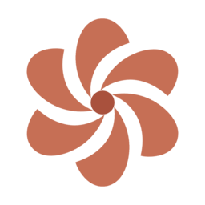

flai-bloom.png 一个像素不动，只把现行 generating 单档（3.6s/圈）扩成三档。 形态辨识度维持现状——本方案是「最小改动基线」，用于对照乙/丙的形态收益。

晚上好
输入文字或上传附件，系统会在后台安排所需能力。
辨识度：形态零变化，强化仅靠「会动」本身——owner「更有辨识度」要求本方案满足度最低； 体积账：零变化（PNG 11.1 KB 保留）；实现面：FlaiBloom.vue 只改 state 档位与 duration，工作量最小； 风险：无形态风险，但 favicon 虚标注释与四套并立问题维持现状（B2 口径未收口）。